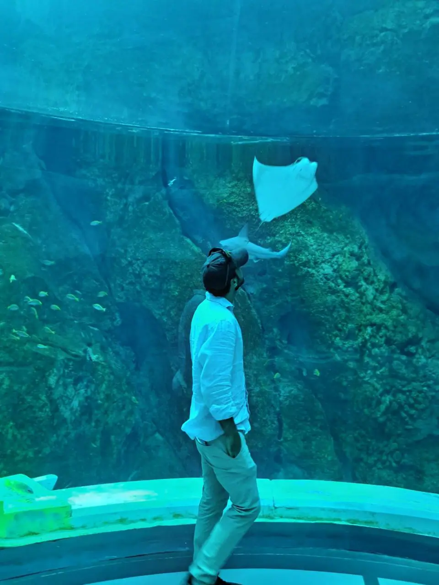

Travel creator · Roma
Chi sono
Quando la bussola interiore è sballata, prenota un viaggio: ti aiuterà a ritrovare la tua strada.
Sono Andrea Lombardo, classe ’95, romano. Amo la tecnologia quanto i viaggi: scoprire nuove culture e vivere esperienze uniche.
Ho scelto di unire queste due passioni — tecnologia e viaggi — dando vita a questo spazio: un diario digitale fatto di itinerari reali, foto e video girati sul campo.
- Itinerari reali e onesti
- Consigli pratici sul campo
- Foto e video originali

6
Destinazioni raccontate
120+
Scatti in galleria
3
Viaggi in programma